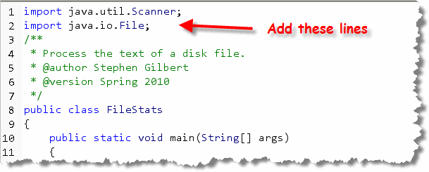
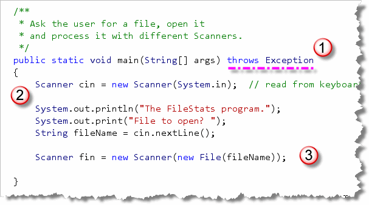
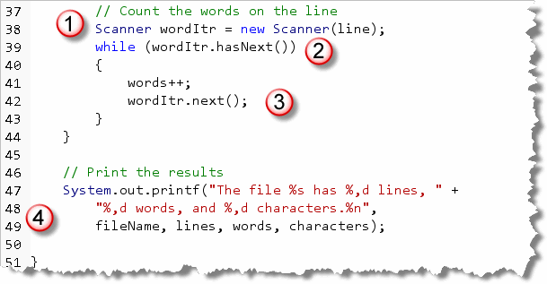
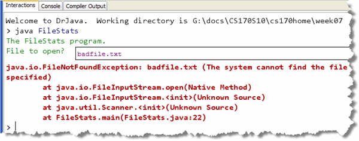
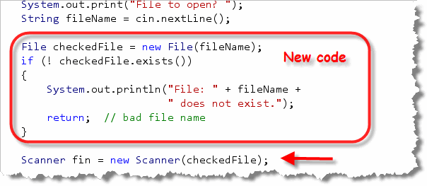

In lecture and in Chapter 7 of your textbook,
you learned how to use the Scanner class as an
iterator, an object that allows you to loop through
all of the data elements in an input stream.
To see how an iterator works, let's build a
program that asks the user for the name of the file to open,
and then uses the Scanner class to loop through
the file and count them the words, lines and characters.
File Stats
Start by creating a console program named FileStats.
Place it inside the Week05 code folder, where you'll
find the text file moby.txt.
Here's what the program should look like as it runs:
 Here are the steps you'll need to follow to complete the
program.
Here are the steps you'll need to follow to complete the
program.
Getting Started
Our program needs to use the Scanner class, which is
located in the java.util package and the
File class which is part of the
java.io package, which we'll need to open
the file.
Step 1 is to import those two packages,
like this:

Opening the File
Here's the code from the program that opens the file:

The code shown here:- first adds the clause
throws Exceptionto the end of themain()method heading. Without this line, we won't be able to open the file without explicitly adding code to deal with errors. - Next, the program creates a "regular"
Scannerconnected to the console, and then asks the user for the name of the file to open. The "keyboard"Scanneris used to read the response from the user, which is stored in theStringvariable namedfilename - Finally, the method creates another
Scannerobject to process (or iterate over) the contents of file. As I did earlier, I named this objectfin, butfItr(for file iterator) is also popular. To construct theScannerobject, I need to call theFileconstructor with the name of the file to open.
Reading the File
We'll use this iterator (fin) to
process the data file a line at a time. Here's the code that
does that
 Here's how it works:
Here's how it works:
- Before we start reading the file, we need to create and initialize counter variables to hold the number of lines, words and characters that we encounter.
- Because this is a data-bound loop, we'll
keep going as long as there are more lines in the file.
Do that by using the iterator's
hasMoreLines()method. - Inside the loop, we actually read the
line by using the iterator's
nextLine()method and storing the result in aStringvariable. - Once we've read a line of text we can update our word and character counters.
One thing you should note
is that nextLine() does not save the
newline characters at the end of each line of text, so
the number of characters we'll report will not include those.
If it is important to have an accurate count, you can call
System.getProperty("line.separator"). This will return
a String containing the end-of-line character
for the platform you are running on. Append this to each line
as it is read and you'll have an accurate count.
Counting Words
To count the words in the file, we'll create a third
Scanner object, and use it to iterate over the
line of text that we retrieved from the file. Here's what
that code looks like:

Here's how it works:- The new
Scannerobject,wordItr, is constructed by passing the line of text read from the file. Notice that this iterator will be iterating over aStringinstead of a file. That's the beauty of iterators: it doesn't matter what you're looping over, the methods are the same. - Because we want to read token-by-token, we use
another data-bound
whileloop, using thehas.next()(instead ofhasNextLine()) iterator method. - Inside the loop, we read the next token (using
the
next()method. We aren't going to further examine it, so we don't bother saving it in a variable; instead, we just count the word. - Finally, after the loop, we have a regular formatted print statement displaying the statistics on our file.
When Things Go Wrong
What happens if you type in a name for a file and your
program can't find the file you've requested? Unfortunately,
the error message that is printed on the console is not
really fit for "regular users":

You can anticipate this problem, and make your program look
a little more professional, by first checking to see
if the file you want to open actually exists. You can do
that by first creating a File object using the
filename retrieved from the user, and then using its
exists() function, to make sure the filename
is valid. If it isn't valid, then you can use a return
statement like this:

Once you know that the filename is valid, you can pass theFile object to the Scanner constructor.
If the file isn't found, I simply exit the program
by using a plain return statement. Since the
main() procedure is not a function it
doesn't need a return statement. If
you want to leave a procedure early, though, you can always
use a plain return with no expression following it.
Closing the File
In this program, we open a disk file and never close it.
That's a really bad habit to get into. We can close the
file by closing the Scanner object we used
to read the file in the first place.
Add this line to the end of your main() method
and all will be well:
fin.close();
Note that you don't need to close the Scanners
used to read from System.in or from the individual
lines of text.